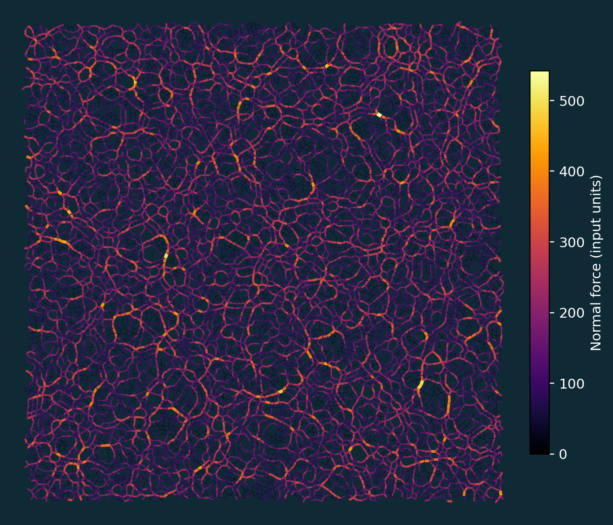

01 / FORCE TRANSMISSIONFollow the
Follow the
force chains.
Turn particle positions and contact forces into a network. Line width and color reveal the strongest paths through the assembly.
USE IT FOR
Inspecting load paths, locating strong contacts, and comparing contact networks across simulation states or experimental observations.


Generated from the supplied particle positions and contact forces.